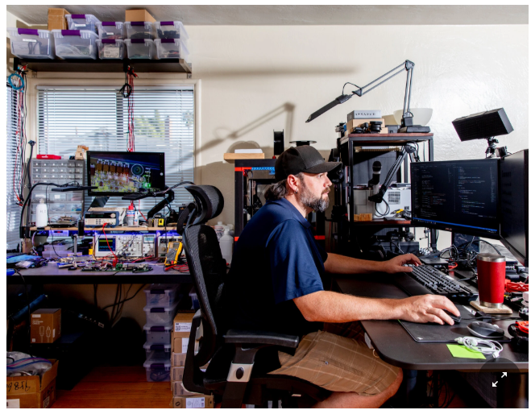
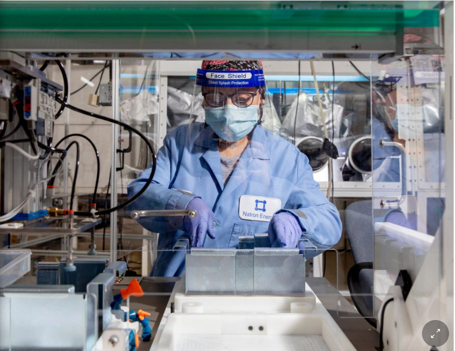
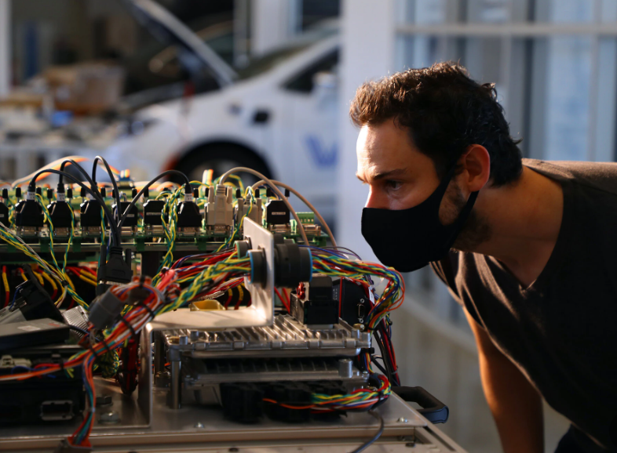

2. Economy
The New York Times "When Start-Ups Go Into the Garage (or Sometimes the Living Room)"
Labs closed in the pandemic, but innovation doesn’t stop. So while some workers have the home office, engineers have the garage.

SAN FRANCISCO — It is the folksiest of Silicon Valley origin stories: Tech start-up makes it big after a wide-eyed entrepreneur builds a prototype in his garage. But Colin Wessells could never have imagined that a pandemic would force him back into the garage just to keep his company going.
Dr. Wessells, 34, is one of the founders and the chief executive of Natron Energy, a start-up building a new kind of battery. In March, when social distancing orders shuttered his company’s offices in Santa Clara, Calif., he and his engineers could no longer use the lab where they tested the batteries. So he packed as much of the equipment as he could into a sport utility vehicle, drove it home and recreated part of the lab in his garage.
“It was only a fraction of the test equipment,” Dr. Wessells said. “But we could at least run some new experiments.”
Designing and creating new technology — never easy tasks — have become far more difficult in the pandemic. This is particularly true for companies building batteries, computer chips, robots, self-driving cars and any other technology that involves more than software code. While many American workers can get by with a laptop and an internet connection, start-up engineers piecing together new kinds of hardware also need circuit boards, car parts, soldering irons, microscopes and, at the end of it all, an assembly line.
But Silicon Valley is not the home of ingenuity for nothing. When the pandemic hit, many start-up engineers in the area, like Dr. Wessells, moved their gear into their home garages so they could keep innovating. And if it wasn’t the garage, then it was the living room.

“We moved millions of dollars of equipment just so people could continue working,” said Andrew Feldman, chief executive of Cerebras Systems, a start-up in Los Altos, Calif., that is building what may be the world’s largest computer chip. “It was the only way we could keep making these physical things.”
To continue development of Cerebras’s dinner-plate-size chip even when the office was closed, one of Mr. Feldman’s engineers, Phil Hedges, turned his living room into a hardware lab. In mid-March, Mr. Hedges packed the 10-by-14-foot room with chips and circuit boards. There were also monitors, soldering irons, microscopes and oscilloscopes, which analyze the electrical signals that travel across the hardware.
To accommodate the gear, Mr. Hedges set up three folding tables. He put half the equipment on the tabletops and half on the floor below. There was so much heat from the computer hardware running day and night that he also set up massive “chillers” to keep the makeshift lab from getting too hot.
Pumping a supercold liquid through plastic tubes that snake around the hardware — “it looks kind of like bright blue Gatorade,” Mr. Hedges said — the chillers did what they were supposed to do. But they required extra attention, especially since Mr. Hedges and his family had just bought a new dog, and the puppy enjoyed chewing on the tubes.
“If the dog had ever bitten through the tube, there would have been pumps shooting fluid everywhere,” he said.
For his wife, the bigger problem was the never-ending whir of the chiller pumps. “That’s what drove her over the edge,” Mr. Hedges, 45, said.
In July, he moved some of the gear back into the Cerebras offices, where he now works on occasion, largely alone. Only seven other people are allowed in the 35,000-square-foot office, with most others still at home with their own gear. The arrangement works well enough, Mr. Hedges said, though he does not always have the equipment he needs because it has been scattered across so many people’s residences.
Like Cerebras, other tech start-ups are finding that they need to move their makeshift labs from one place to another — or have several jury-rigged labs going at the same time — to keep development going.
Voyage, a self-driving car start-up in Palo Alto, Calif., initially bought various self-driving car parts and shipped them to two engineers so they could work at home. The start-up sent them lidar sensors (the laser sensors that track everything around the car) and inertial measurement units (the devices that track the position and movement of the car itself) so they could keep testing changes to the car’s software.
But Voyage did not just rely on the at-home setups. In some cases, it arranged for engineers to log on to their home computers for remote access to a collection of car parts set up at the company’s offices.
Called “the HIL” — short for “hardware in the loop” — this was basically a car without wheels, complete with steering rack and braking system. Rather than run tests on the contraption up close, engineers tapped into it over the internet and ran tests from afar.
“It helps make us more efficient,” said Eric Gonzalez, one of Voyage’s founders and a director of engineering. “But we had to change our road map.”
If all else failed, there was always the garage.
In Silicon Valley, the garage has long had a kind of mythical aura. In the 1990s, Larry Page and Sergey Brin developed Google in a garage. In the late 1930s, Bill Hewlett and David Packard created Hewlett-Packard in another. Today, the HP Garage, in Palo Alto, remains well preserved and is sometimes called the “birthplace of Silicon Valley.”
Now, in the pandemic, the Silicon Valley garage has become a metaphor for making use of whatever space is available to do what needs to be done, engineers said. Mr. Hedges, the Cerebras engineer, said he had moved equipment into the living room only because he did not have a garage.
“If we had a garage, my wife would have put me there — with the chillers,” he said.
In the one-car garage of Dr. Wessells, the Natron chief executive, the recreation of the office lab allowed him to test batteries inside “environmental chambers” the size of mini-refrigerators that control temperature and humidity. He said he had taken over the workbench in the garage with all of the equipment.
“I was the only one in the company who could run new experiments,” Dr. Wessells said. “I just had to keep calling our scientists, asking how to hook everything up.”
But there was not enough room for all the gear. So instead of running experiments on hundreds of batteries as Natron would usually do in the lab, Dr. Wessells said, he could fit only tens of batteries in the garage. “It was just a trickle of what we normally do,” he said.

By July, new government orders allowed Natron — deemed an essential business because it served cellphone networks — to get some engineers back into the lab, with staggered hours.
The start-up also installed software on computers that allowed engineers to have access to the lab’s equipment from home. The arrangement was not ideal — it was not like having the equipment in front of people — but it worked, Natron engineers said.
“It is sort of like I am sitting there,” said Aaron Loar, a Natron engineer who helps write the software that operates the batteries. “But I’m a little hamstrung.”
Natron also started manufacturing batteries again at a facility in Santa Clara, where it reorganized the assembly line for social distancing. It installed plastic barriers between each worker on the line and rebuilt the building’s airflow system. While the assembly line is slower, no one has tested positive for the coronavirus, Dr. Wessells said.
“The engineering team isn’t as fast. The manufacturing line isn’t as fast,” he said. “But that is just the cost of business during Covid.”
As for his garage, Dr. Wessells moved the lab equipment out in August and back into the office. That meant that for the first time in months, he and his wife could use the garage workbench, which they needed for home improvement projects.
“When there’s a battery lab in the garage, you put other things on hold,” he said.